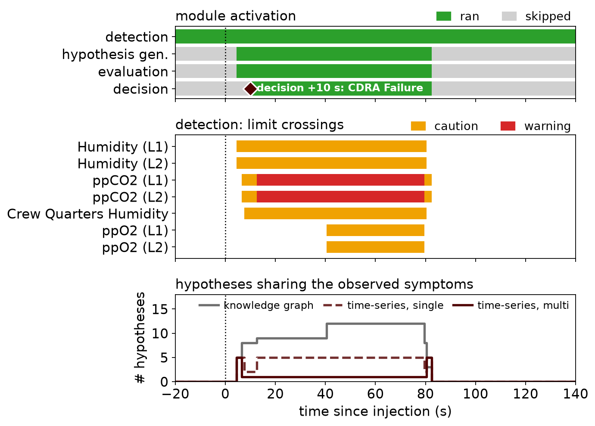

Scenario 2 · activation and limit crossings for multi-channel time-series matching; hypotheses sharing symptoms: knowledge graph = nonzero symptom match, time-series = signature drives every scored channel
Humidity L1 / L2 cross caution → hypothesis generation and evaluation start
5 candidates share the humidity symptom, for all three methods
ppCO₂ and crew-quarters humidity cross caution → knowledge graph 8, single 2, multi 1 (CDRA Failure)
Daphne-AT signals recovery of CDRA Failure (correct)